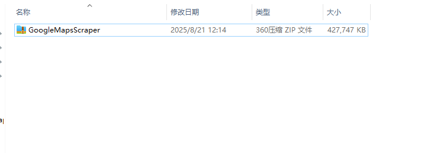
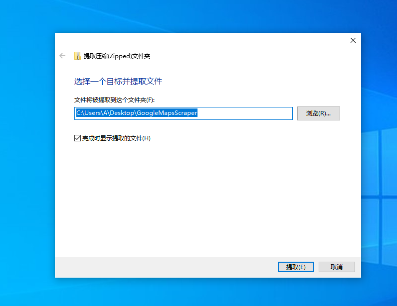
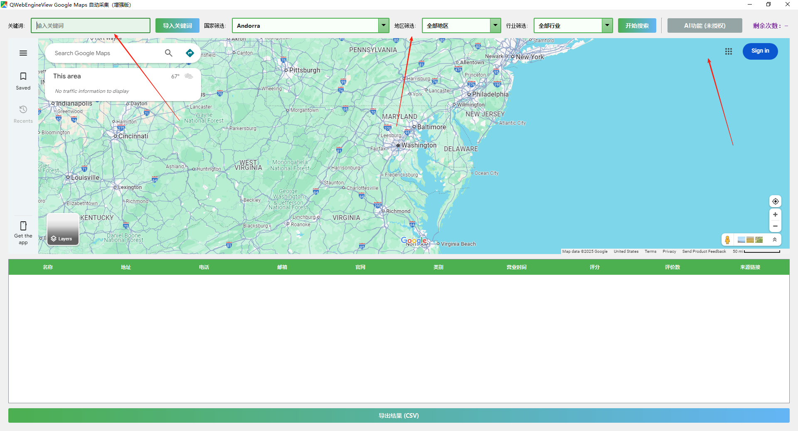
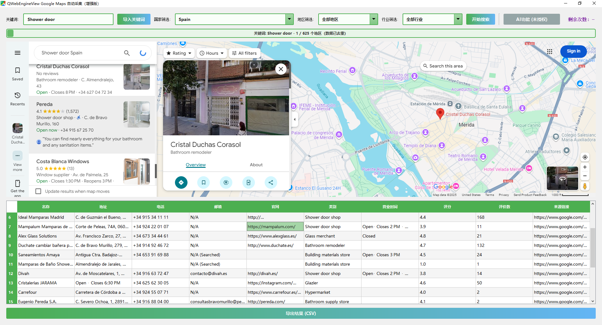

入门指南
欢迎使用 GoogleMapsScraper！首次使用，请确保您已经拥有一个有效的账户。登录后，您将看到我们的主控制面板。
安装教程
我们的应用是一款本地软件，需要在您的电脑上进行安装。您只需要下载安装包解压到一个文件夹中，向客服添加一个有效的账户即可开始使用。请联系我们的客服开通账号

解压教程
下载完成后，请使用常见的解压软件（如 WinRAR、7-Zip 或系统自带的解压功能）将安装包解压到您选择的文件夹，例如 D:\GoogleMapsScraper。解压完成后，进入该文件夹即可看到可执行文件和相关资源。

登录教程
解压完成后，双击运行软件，进入登录界面。请输入客服为您提供的账号和密码即可登录系统。如果您还没有账号，请联系客户支持获取。
界面概览
我们的界面主要分为三个部分：关键词、地区选择和AI功能。您可以在左上角输入框输入关键词和选择一个地点来开始一个新的抓取任务。

开始搜索
输入至少一个关键词和一个地点（选填地区），然后点击“开始搜索”按钮。任务将进入队列并开始执行。任务状态会实时更新，完成后您可以下载结果。

导出结果
目前，我们仅支持将结果导出为 CSV 格式。